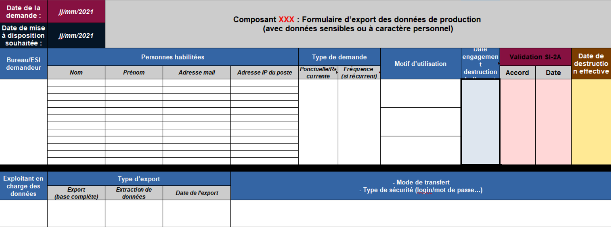
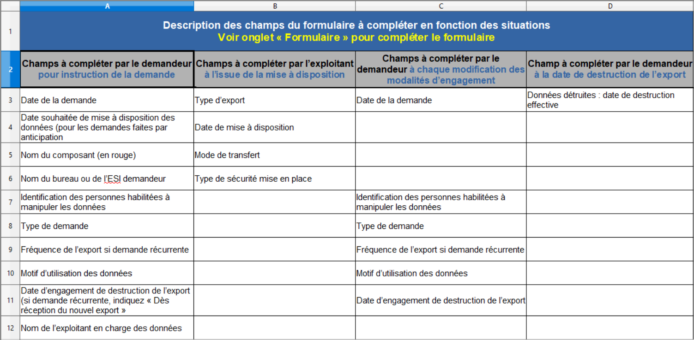

Projet 4 — Traitement d’une demande d’export de données de production
Participation au traitement d’une demande d’export de données de production. Cette mission consistait à consulter la documentation interne, compléter le formulaire de demande d’export et vérifier les informations nécessaires afin de préparer le dossier destiné au bureau SI-2A dans le respect des procédures internes et des règles de sécurité.
Contexte
Certaines équipes peuvent avoir besoin d’extraire des données de production afin de réaliser des analyses ou des tests. Ces opérations doivent suivre des procédures strictes afin de garantir la sécurité, la confidentialité et la traçabilité des données manipulées.
Démarche
- Consultation de la documentation interne concernant les demandes d’export.
- Identification des informations nécessaires à la demande.
- Utilisation du formulaire officiel de demande d’export.
- Vérification de la conformité de la demande selon les procédures internes.
- Préparation du dossier destiné au bureau SI-2A.
Activités réalisées
Consultation de la documentation interne
Objectif : comprendre les procédures liées aux demandes d’export.
Action : lecture des documents internes et identification des étapes à suivre.
Résultat : meilleure compréhension du processus et des règles à respecter.
Utilisation du formulaire de demande
Objectif : formaliser la demande d’export.
Action : compléter le formulaire avec les informations nécessaires.
Résultat : demande structurée et prête à être transmise.
Vérification de la conformité
Objectif : vérifier que la demande respecte les procédures internes.
Action : contrôle des informations et de la cohérence du dossier.
Résultat : demande conforme avant transmission.
Préparation du dossier SI-2A
Objectif : transmettre une demande complète.
Action : préparation et organisation des éléments nécessaires.
Résultat : dossier prêt à être traité par le bureau SI-2A.
Résultats
La demande d’export a été correctement formalisée en respectant les procédures internes. Cette mission m’a permis de comprendre le processus de traitement d’une demande liée aux données de production ainsi que l’importance du respect des règles de sécurité dans la gestion du système d’information.
Preuves
Exemples de documents utilisés lors du traitement de la demande.
Formulaire de demande d’export
Formulaire utilisé pour formaliser la demande destinée au bureau SI-2A.

Fichier Excel d’export
Exemple de fichier Excel contenant les données exportées.
